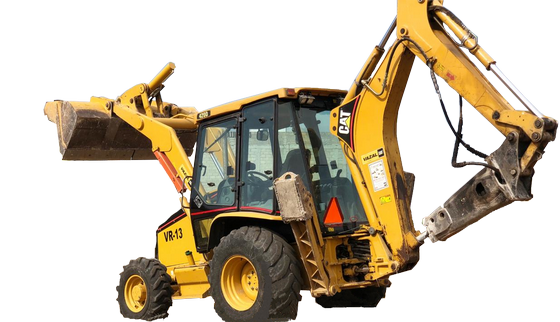

Maquinaria pesada
14 líneas de equipo para venta y renta, con o sin operador:
- Excavadora con o sin martillo 320–345.
- Retroexcavadora y motoconformadora.
- Camión Torton y/o Góndola de 7, 14 y 30 m³.
- Pipa de agua, payloader y vibrocompactador.